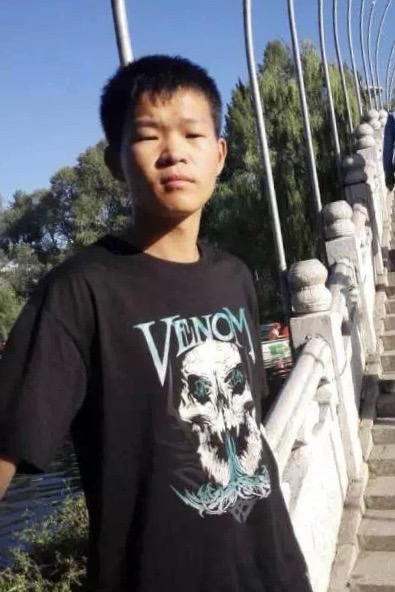

I am a senior student at Electronic Engineering, Tsinghua University. Currently, I am a student intern in biorobotics lab, Carnegie Mellon University.
Research experience

Gesture recognition based on CSI
Advisor: Yuan He| Department of Software | Tsinghua University
This project aims at detecting and recognizing human gestures based on WIFI channal signal information. We used a PCA and dwt based feature extraction method to extract discriminate feature from the 30 dimensional WIFI signal, and then we trained a SVM classifier to recognize the specific 9 gestures.


Disentangled representation GAN for Pose-invariant face recognition
Advisor: Jiwen Lu | Department of Automation | Tsinghua University
This project is mainly about generating face images of different poses by given any pose image
[report][code]